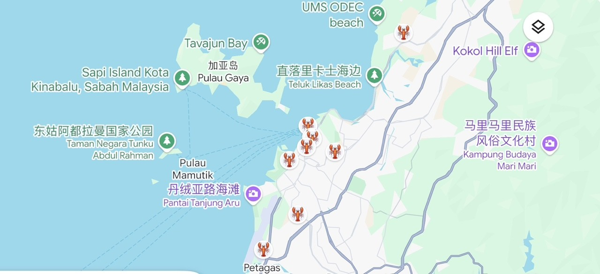
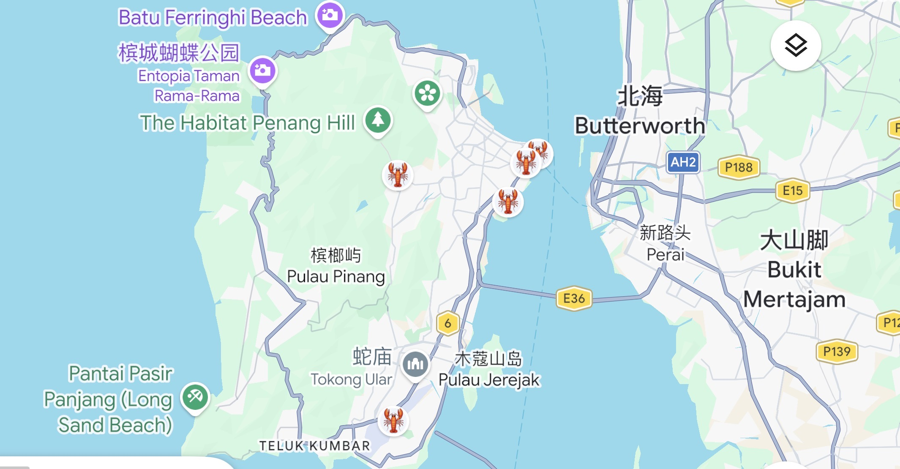

亚庇 Kota Kinabalu + 槟城 Penang
2026/09/30 — 2026/10/06 · 共 7 天
住宿地点：Mari 2 Homestay M7（距机场5.4km）📍 Google Maps
住宿地点：Comfy Homestay（距机场22km）📍 Google Maps

青岛胶东国际机场 → 新加坡樟宜机场
新加坡樟宜机场转机
新加坡 → Kota Kinabalu
Kota Kinabalu International Airport
下飞机后，到"Foreign Passport"人工柜台，盖西马入境章（紫色方形）
取行李、办理手机卡、检查护照，Grab去民宿
📕 手机卡攻略回住处休息
提前吃晕船药
亚庇市区晚餐
KK Garden Seafood: 🍛 Google Maps📕小红书推荐
钱塘府海鲜餐厅: 🍛 Google Maps 📕小红书推荐
源茶室（加雅街）🍛 Google Maps 📕小红书推荐
Zing sunset bar🍛 Google Maps📕小红书推荐
洪金买大酒店🍛 Google Maps📕小红书推荐
上午场活动
整理行李
直飞，打印登机牌，盖东马离境章

龙山堂邱公司是马来西亚🇲🇾槟城最华丽的华人宗祠，是槟城“五大姓”之首（邱，谢，杨，林，陈），有着超过100年的历史【感觉没什么意思】
📍 Google Maps购物商场：Gurney Plaza 📍 Google Maps / Queensbay Mall 📍 Google Maps / 1st Avenue Mall 📍 Google Maps
确认购物凭证、护照、退税材料
返程航班，确认接机信息，回家睡觉
| 天数 | 人数 | 交通/门票 | 餐饮 | 合计 |
|---|---|---|---|---|
| Day 1 | 6 | 35–45 | 210–270 | 245–315 |
| Day 2 | 6 | 586–732 | 210–270 | 796–1002 |
| Day 3 | 6 | 500–580 | 0–60 | 500–640 |
| Day 4 | 6 | 772–890 | 210–270 | 982–1160 |
| Day 4-B | 6 | 76–110 | 210–270 | 286–380 |
| Day 5 | 4 | 206–252 | 140–180 | 346–432 |
| Day 6 | 4 | 220–270 | 140–180 | 360–450 |
| Day 7 | 4 | 104–148 | 140–180 | 244–328 |